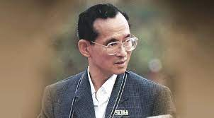

พระราชกรณียกิจ ตั้งแต่พุทธศักราช 2502 เป็นต้นมา พระบาทสมเด็จพระเจ้าอยู่หัว ได้เสด็จพระราชดำเนินไปทรงกระชับสัมพันธไมตรีกับประเทศต่าง ๆ ทั้งในยุโรป อเมริกา ออสเตรเลีย และ เอเชีย และได้เสด็จพระราชดำเนินไปทรงเยี่ยมราษฎรในภูมิภาคต่างๆ ได้ทรงพระวิริยะอุตสาหะหาทางแก้ปัญหาตลอดมาตราบจนปัจจุบัน ได้ทรงขจัดทุกข์ยากนำความผาสุกและทรงยกฐานะความเป็นอยู่ของราษฎร ให้ดีขึ้นด้วยพระบุญญาธิการและพระปรีชาสามารถปราดเปรื่อง พร้อมด้วยสายพระเนตรอันยาวไกล ทรงอุทิศพระองค์เพื่อประโยชน์สุขของราษฎร
พระบาทสมเด็จพระเจ้าอยู่หัว ทรงตรากตรำพระวรกายทรงงานอย่างมิทรงเหน็ดเหนื่อย แม้ในยามทรงพระประชวร ก็มิได้ทรงหยุดยั้งพระราชดำริเพื่อขจัดความทุกข์ผดุงสุขแก่พสกนิกร กลางแดดแผดกล้าพระเสโทหลั่งชุ่มพระพักตร์ และพระวรกายหยาดตกต้องผืนปฐพีประดุจน้ำทิพย์มนต์ชโลมแผ่นดินแล้งร้าง ให้กลับคืนความอุดมสมบูรณ์นับแต่เสด็จเถลิงถวัลยราชตราบจนปัจจุบัน แม้ในยามประเทศประสบภาวะเศรษฐกิจ ตั้งแต่ ปี พ.ศ. 2539 เป็นต้นมา ก็ได้พระราชทานแนวทางดำรงชีพแบบ “เศรษฐกิจพอเพียง” และ “ทฤษฎีใหม่” ให้ราษฎรได้พึ่งตนเอง ใช้ผืนแผ่นดินให้เกิดประโยชน์สูงสุดประกอบอาชีพอยู่กินตามอัตภาพซึ่งราษฎรได้ยึดถือปฏิบัติเป็นผลดีอยู่ในปัจจุบัน

นางสาวธนภรณ์ บุณฑริกมาศ ม.6/1 เลขที่ 22